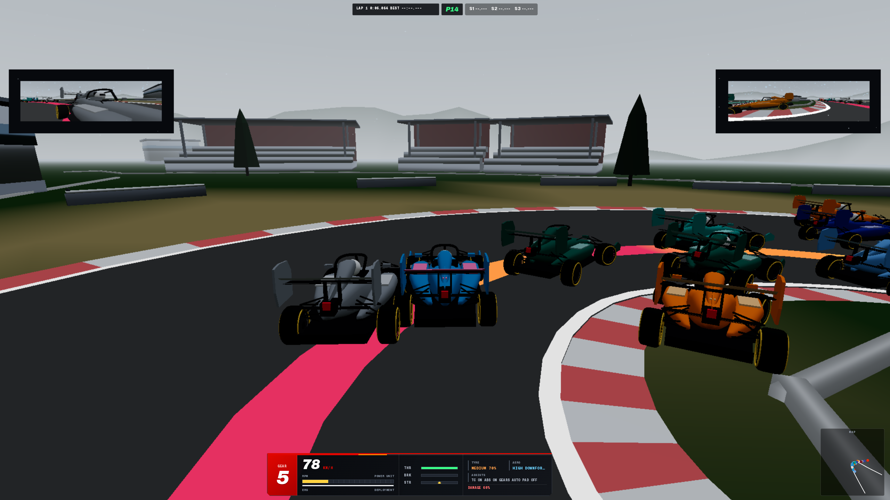
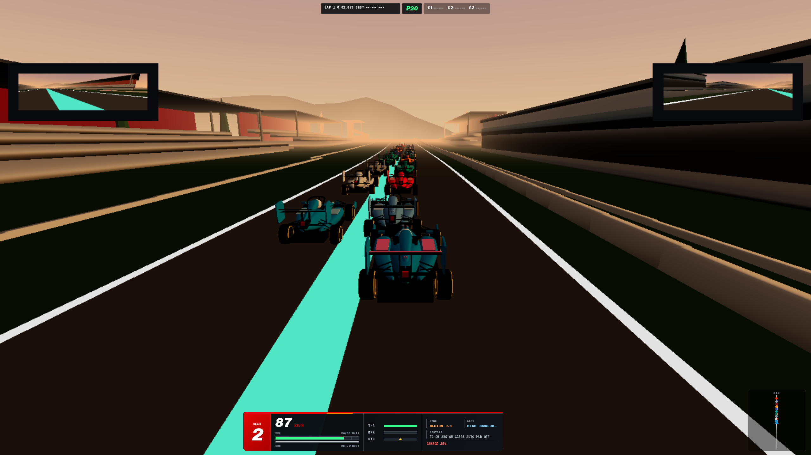
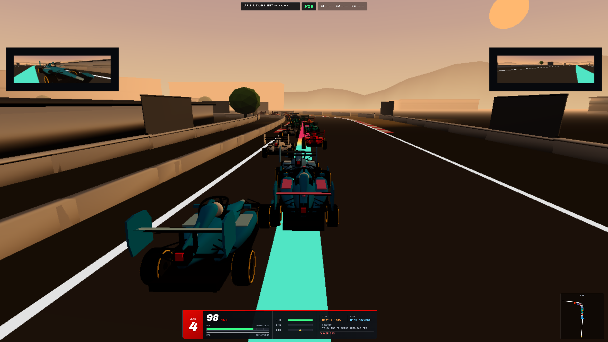
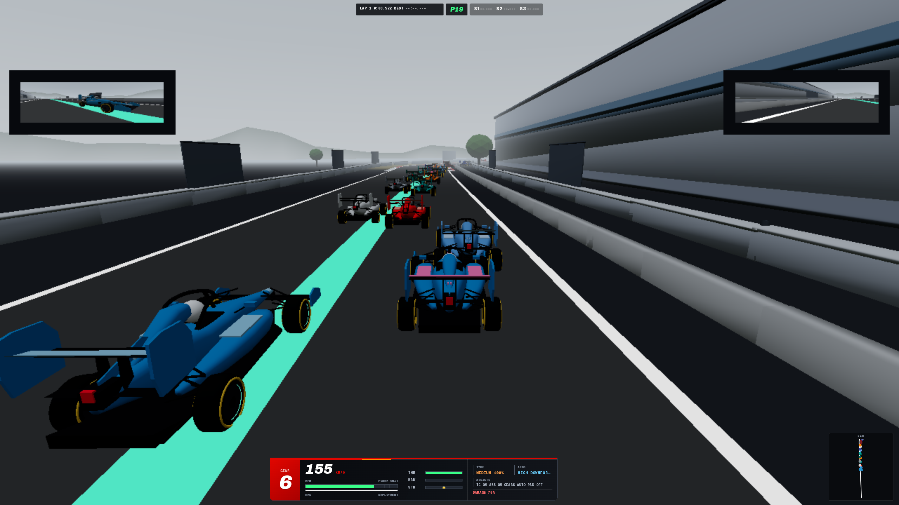
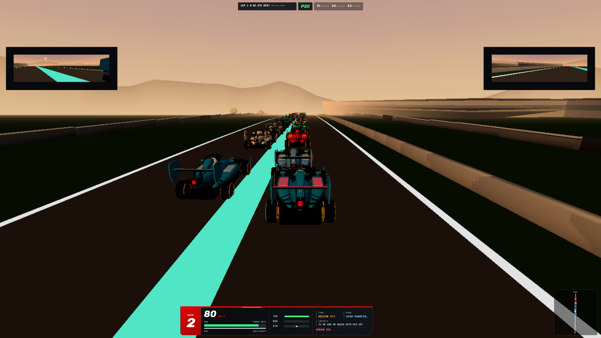
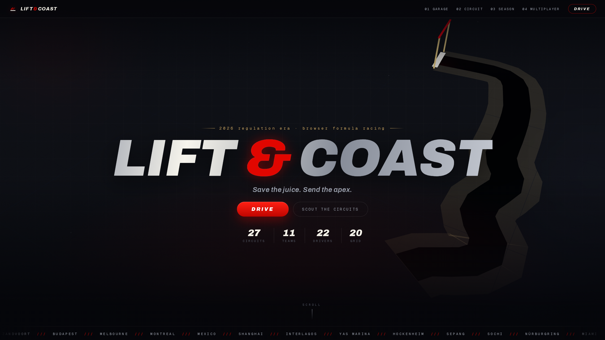

27 CIRCUITS.
Circuit de Spa-Francorchamps /// 19 corners

REAL GPS
CENTERLINES.
Autodromo Nazionale Monza /// 11 corners

NOT A FLAT
PLANE.
Baku City Circuit /// 20 corners

SO WHERE DO
I LIFT?
Throttle
Lift
Brake
Brake hard
Circuit de Spa-Francorchamps /// 19 corners

20 CARS.
ONE LINE.
P1NORLEADER
P2VER+0.3
P3LEC+0.9
P4HAM+1.8
P5RUS+2.9
P6PIA+4.3
P7ANT+6.0
P8LAW+7.9
Circuit de Spa-Francorchamps /// 19 corners

CHANGE THE
WEATHER
MID-LAP.
Race Ops /// press H

STEWARDS SEE
EVERYTHING.
Circuit de Spa-Francorchamps /// 19 corners

IT RUNS
IN A TAB.
Marina Bay Street Circuit /// 19 corners

LIFT & COAST
SAVE THE JUICE. SEND THE APEX.
Circuito de Madring /// 22 corners

NO SERVER.
NO INSTALL.
NO EXCUSES.
React Three Fiber · Rapier physics · 27 circuits from real GPS centerlines